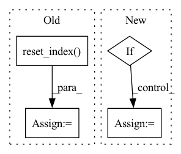

Pattern ID :18442
Before Change
split_idx_train = n_train + n_lags + n_forecasts - 1
split_idx_val = split_idx_train - n_lags if inputs_overbleed else split_idx_train
df_train = df.copy(deep=True).iloc[:split_idx_train].reset_index(drop=True)
df_val = df.copy(deep=True).iloc[split_idx_val:].reset_index(drop=True)
log.debug("{} n_train, {} n_eval".format(n_train, n_samples - n_train))
return df_train, df_val
After Change
df_train (pd.DataFrame or list of pd.Dataframe): training data
df_val (pd.DataFrame or list of pd.Dataframe): validation data
if isinstance(df, list):
df_list = df.copy()
df_train_list = list()
df_val_list = list()
if local_modeling:
for df in df_list:
df_train, df_val = single_split_df(df, n_lags, n_forecasts, valid_p, inputs_overbleed)
df_train_list.append(df_train)
df_val_list.append(df_val)
df_train, df_val = df_train_list, df_val_list
else:
threshold_time_stamp = find_time_threshold(df_list, n_lags, valid_p, inputs_overbleed)
df_train, df_val = split_considering_timestamp(df_list, threshold_time_stamp)
else:
df_train, df_val = single_split_df(df, n_lags, n_forecasts, valid_p, inputs_overbleed)In pattern: SUPERPATTERN
Frequency: 3
Non-data size: 4
Instances Fragment ID: 60237015
Project Name: ourownstory/neural_prophet
Commit Name: d07b79568ef37904de81ba00248764233fbaa8c8
Time: 2021-10-07
Author: ourownstory@users.noreply.github.com
File Name: neuralprophet/df_utils.py
M Class Name: AnonimousClass
N Class Name: AnonimousClass
M Method Name: split_df(6)
N Method Name: split_df(5)
M Parent Class:
N Parent Class:
M File Name: neuralprophet/df_utils.py
N File Name: neuralprophet/df_utils.py
M Start Line: 297
M End Line: 312
N Start Line: 506
N End Line: 539
Before Change
ts_data = []
meta_data = []
for idx, group in G:
group = group.reset_index(drop=True)
meta_data.append(group.values[:, :2]) // save unique_id and ds
ts_data.append(group.values[:, 2:]) // avoid unique_id and ds
s_data = []After Change
ts_data.append(data[start:end])
meta_data.append(meta[start:end])
if S["unique_id"].value_counts().max() > 1:
raise ValueError("Found duplicated unique_ids in S_df")
s_data = S.drop(columns="unique_id").values
del S, Y, X, M, G
gc.collect() Fragment ID: 60237026
Project Name: nixtla/neuralforecast
Commit Name: 239b39524453056071018ee1e3d10b1799e60c4c
Time: 2021-06-03
Author: jmorales@grupoabraxas.com
File Name: nixtla/data/tsdataset.py
M Class Name: AnonimousClass
N Class Name: AnonimousClass
M Method Name: _df_to_lists(5)
N Method Name: _df_to_lists(5)
M Parent Class:
N Parent Class:
M File Name: nixtla/data/tsdataset.py
N File Name: nixtla/data/tsdataset.py
M Start Line: 287
M End Line: 308
N Start Line: 285
N End Line: 306
Before Change
log.error("Please type a valid value for valid_p (for global modeling it should be between 0.0 and 1.0)")
df_joint, _ = join_dataframes(df_dict)
df_joint = df_joint.sort_values("ds")
df_joint = df_joint.reset_index(drop=True)
n_samples = len(df_joint)
n_samples = n_samples if inputs_overbleed else n_samples - n_lags
n_valid = max(1, int(n_samples * valid_p))
n_train = n_samples - n_validAfter Change
df_joint = join_dataframes_for_split_df(df_dict)
n_samples = len(df_joint) - n_lags + 2 - (2 * n_forecasts)
n_samples = n_samples if inputs_overbleed else n_samples - n_lags
if 0.0 < valid_p < 1.0:
n_valid = max(1, int(n_samples * valid_p))
else:
assert valid_p >= 1
assert type(valid_p) == int
n_valid = valid_p
n_train = n_samples - n_valid
threshold_time_stamp = df_joint.loc[n_train, "ds"]
log.debug("Time threshold: ", threshold_time_stamp) Fragment ID: 60237024
Project Name: ourownstory/neural_prophet
Commit Name: 6ea5480e1228b3c95837312b14281f2a71c6a202
Time: 2022-05-12
Author: mgheorghecr@gmail.com
File Name: neuralprophet/df_utils.py
M Class Name: AnonimousClass
N Class Name: AnonimousClass
M Method Name: find_time_threshold(5)
N Method Name: find_time_threshold(4)
M Parent Class:
N Parent Class:
M File Name: neuralprophet/df_utils.py
N File Name: neuralprophet/df_utils.py
M Start Line: 602
M End Line: 609
N Start Line: 791
N End Line: 820